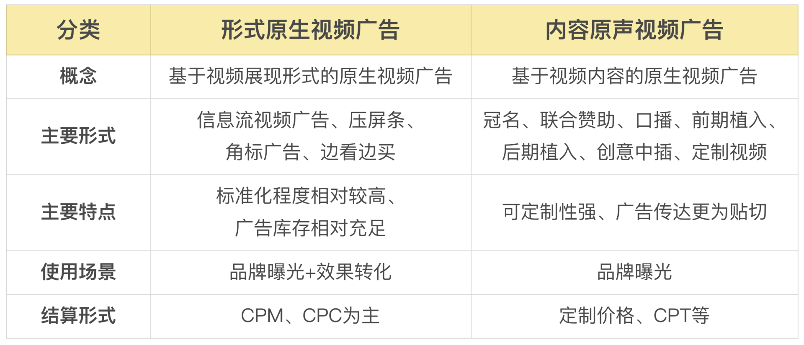
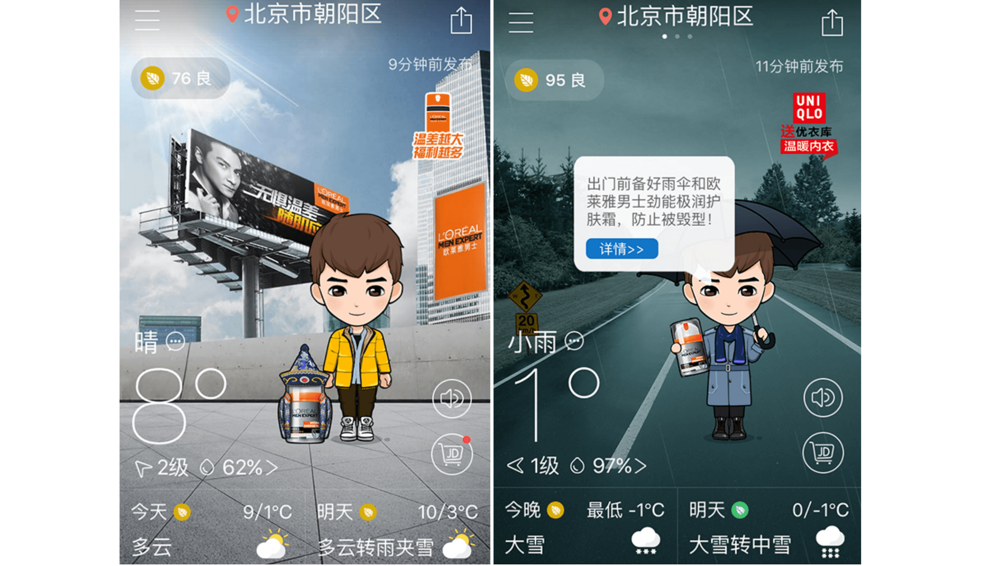
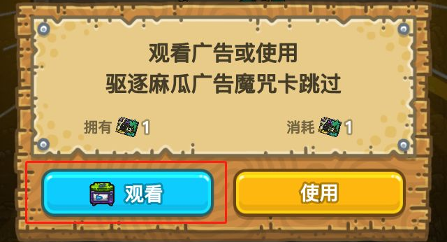
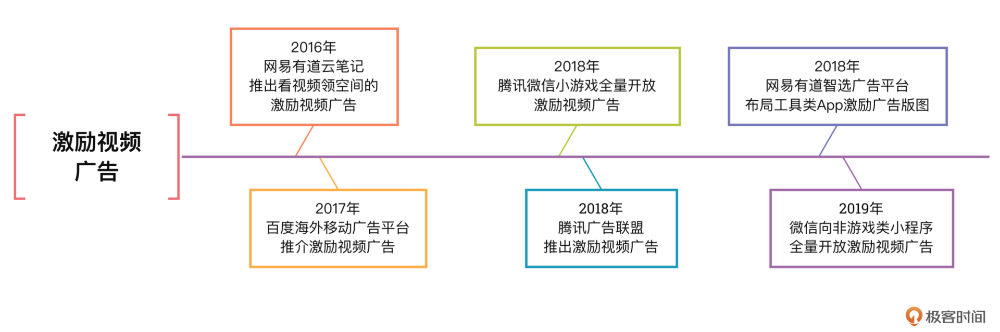
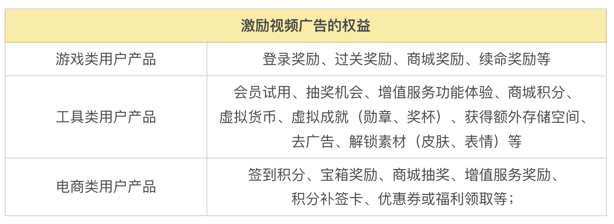
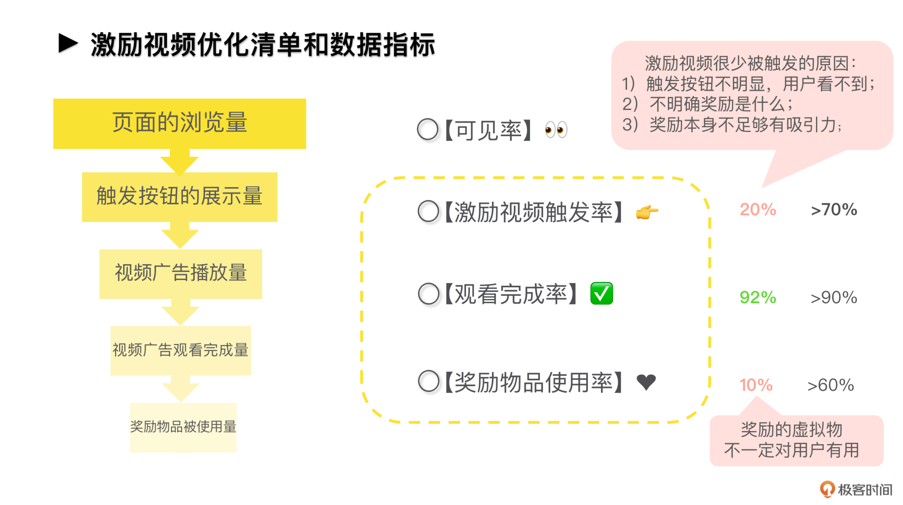
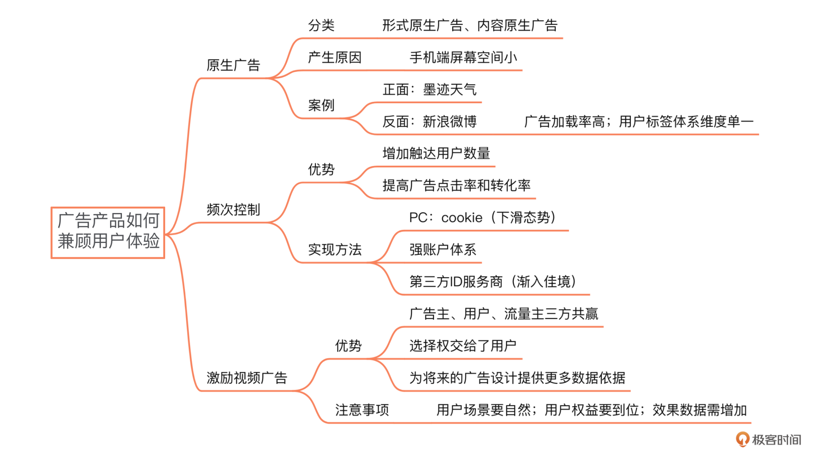

- 00 开篇词 作为一名互联网人，你为什么必须了解广告产品？.md.html
- 01 业务逻辑：广告产品的前世今生和商业模式是怎样的？.md.html
- 02 业务链条：广告主、媒体、第三方等分别如何看待广告产品？.md.html
- 03 头部玩家：从BAT到跳动的字节，广告产品有哪些变化与发展趋势？.md.html
- 04 产品体系：互联网大厂的广告产品存在哪些共性和区别？.md.html
- 05 变现模式：什么样的产品适合采用广告模式变现？.md.html
- 06 产品路线：大厂和小厂的广告产品发展路线有什么区别？.md.html
- 07 计价与效果（上）：如何制定合理的计价方式？.md.html
- 08 计价与效果（下）：如何制定合理的效果评估指标？.md.html
- 09 效果优化：如何一步步从提升曝光量深入到提升销量？.md.html
- 10 流量优化：如何兼顾广告收入和用户体验？.md.html
- 11 物料生产：如何满足广告主的创意需求？.md.html
- 12 精准定向：如何建立一个成熟的用户标签体系？.md.html
- 13 转化优化：互联网大厂如何利用算法优化广告效果？.md.html
- 14 程序化交易：程序化交易是否可以提升广告效果？.md.html
- 15 需求调研：广告产品潜在需求的调研流程是怎样的？.md.html
- 16 平台建设：如何从0到1建立一个完整的广告产品平台？.md.html
- 17 职业发展：新人入行，如何判断自己是否适合做广告产品？.md.html
- 18 团队建设：如何搭建一个高效的广告产品团队？.md.html
- 19 跨团队合作：产研团队和销售端、媒体端、市场端如何合作？.md.html
- 20 产品运营：不同发展阶段如何制定业务目标和运营策略？.md.html
- 21 广告产品彩蛋：课程答疑与推荐书目.md.html
- 结束语 你想要成为什么样的互联网广告产品人？.md.html
- 捐赠
10 流量优化：如何兼顾广告收入和用户体验？
你好，我是郭谊。
在上一讲中，我提到了广告产品的效果优化，需要从提升广告曝光量，也就是我们俗称的流量优化开始。但是，流量优化，绝不仅仅是提高库存和占有率这么简单。这一讲，我们要学习的是流量优化的另一个重要方面：如何通过广告位的设计，兼顾广告收入与用户体验？
前不久，一位广告产品的同行找我辅导求职。在辅导过程中，他提到面试某大厂时，曾经被面试官问到过一个很经典的问题：“如果一个客户的广告投放效果不好，可能是哪些原因造成的？”
作为一个有超过5年工作经验的广告产品经理，他说：“我会先看一下客户的投放目标，然后看一下他的人群包和流量选择。”他这里已经点到了一些关键信息，但是整个思路还是不够完整，尤其是忽略了流量优化层面的一些重要因素。
什么样的广告位置效果最好？
当我们从流量优化角度讨论一个广告位的效果时，首先要考虑的，就是广告位置。具体一点来讲，广告位置是媒体、页面、广告位这几项选择的组合。为什么一提到购买广告产品，广告主首先想到的是百度的搜索关键词广告、腾讯视频的贴片广告、微信的朋友圈广告呢？就是因为这些广告产品在广告位置上具备以下几点优势：
首先，从媒体选择上来说，承载这些广告产品的媒体都是中国移动互联网的优势媒体，覆盖海量用户，曝光量巨大，而且在这些媒体上投广告，就好比当年在电视上的央视或者上星卫视投广告一样，本身就是广告主实力的象征：我已经花了这么多钱在这些媒体上投广告了，总能体现我的诚意了吧？
其次，从页面选择上来说，这些广告产品出现的页面都是用户浏览量或者说用户日活最高的页面，最容易被用户看到。
最后，从广告位上来说，这些广告产品的位置都在手机的首屏甚至占据全屏，很显眼，或者虽然夹杂在内容中间，但是和内容长得很像，容易被用户接受，所以用户体验比较好。例如微信朋友圈广告，我还经常能看到我的很多微信好友点赞甚至评论呢。
所以，我们能把控的最首要，也是广告产品效果影响最大的因素，就是广告产品所依托的流量，究竟是怎样的媒体+页面+位置的组合。这也是为什么我们要和用户产品不断去沟通，不断去开辟和优化新的广告位的原因。
如何兼顾广告产品的用户体验？
在为了提升广告产品收入，开辟新的广告位时，我们遇到的第一个挑战就是：如何平衡新广告位的开辟和用户的体验？在这种时候，我们一般通过以下几种产品的设计思路来实现对这两者的兼顾。
原生广告：不打扰，是我的温柔
第一种是尽量采取原生广告的样式设计。为了让你更好地理解这一点，在正式介绍原生广告之前，我举几个你在网络生活中常见的场景：
- 微信的朋友圈广告
- 今日头条的信息流广告
- 抖音的信息流广告
什么是原生广告？
原生广告大约诞生于2012年，英文叫做Native Ads，指的就是长得和App或者网页上原本的非广告内容或者功能模块非常像的广告产品。微信朋友圈广告和今日头条的信息流广告，都是图文形式，抖音的信息流广告是全屏的短视频形式，和App上原本的内容形式类似。
你或许会问：“那么，原生广告是不是就是信息流广告呢？”不是的。信息流广告是原生广告的一种常见的子类，还有很多非信息流形式的原生广告。例如，原生视频广告中的“边看边买”。这种广告产品利用SDK技术，打通了PC/iOS/Android等系统的全终端，和视频媒体平台进行对接。当版权视频内容中出现广告主的商品时，用户点击视频画面中的商品图像，就能跳转到电商购买页进行下单，对用户进行实时导流和转化。
原生视频广告的分类
除了“边看边买”之外，原生视频广告还有很多类型，主要分为两种：
- 形式原生视频广告：原生信息流视频广告、原生压屏条、原生角标等。形式原生视频广告属于标准广告产品，一般由广告业务团队负责设计、开发上线，然后进行规模化售卖。
- 内容原生视频广告：冠名、联合赞助、口播、植入、创意中插、定制视频。内容原生视频广告属于非标准广告产品，由内容营销团队和广告主通过项目制进行谈判和售卖。

优秀案例
优秀的原生广告案例有很多，比如工具型产品墨迹天气推出的原生广告，和产品功能模块联系极为紧密。在欧莱雅男士新品“劲能护肤系列”的广告产品投放中，就包括了小墨道具、天气背景等原生广告。天气预报主页中，动画小人手持欧莱雅男士护肤霜，背景也被替换成有着欧莱雅户外广告的虚拟楼宇图片。这些广告和原有的天气预报内容自然地融合在一起，不干扰用户浏览所需的信息，甚至因为精巧的创意和幽默感，引起用户的会心一笑。

原生广告因为样式上和App或者网页融合得非常好，所以用户刷到的时候不会觉得很突然。我在腾讯给原生广告创作产品推广文案的时候，曾经用过的一句话是：不打扰，是我的温柔。但如果太像了，会不会让用户因为分不清内容和广告，而带来困扰呢？
其实这一点你不必担心。按照我国广告法的规定，广告需要标注上“广告”或者“推广”等文字，所以你仔细看一下是能分辨出来的。但是，因为这些字一般都很小，位置也不明显，所以没有经验的用户起初可能分辨不出来。例如比较偏僻的地区的中老年用户。这让我想起我外公也曾把央视的广告当成新闻转述给我们，让我们这些晚辈觉得哭笑不得又不免有些担心。所以，想要进一步提升用户体验，我们还需要结合精准定向等技术。
根本原因
现在我们做广告产品尽量采取原生广告的样式设计，还有一个根本原因，就是人们上网设备的变化，推动了界面设计的优化。因为手机屏幕尺寸相比电脑屏幕要小很多，称得上是寸土寸金，所以原先在电脑网页上呈现的横幅或按钮广告，如果照搬到手机屏幕上，会让用户觉得非常别扭，破坏用户体验，广告效果也不好，所以移动互联网时代，原生广告才会大行其道。
但是，即使是再原生的广告，如果太过分还是可能伤害用户体验。这方面的典型反面教材就是新浪微博的信息流广告。它从样式上来说也是属于典型的原生广告，但却经常被用户吐槽。这是为什么呢？
问题就在于广告加载率。
广告加载率：也叫做Ad load，指一段时间内，用户人均看到的广告数/人均看到内容数。例如，在信息流产品中，广告加载率=人均看到的广告数÷人均看到的feed数。
为了照顾用户体验，一般信息流广告的广告加载率不超过10%，也就是最多每10条内容夹杂一条广告。但是如果你是经常刷微博的人，应该能感觉到它头几屏的广告加载率有时会超过10%。而且，新浪微博账号体系下的用户标签，没有那么多维度，加上新浪微博属于公域流量，面向的用户群体种类非常多，很难结合精准定向技术来提升广告的用户体验，所以它的信息流广告用户体验一直不是很好，但是迫于变现压力又要满载。
频次控制：过犹不及，珍惜与用户的每次沟通
为了给广告主与用户之间的沟通提供最有效、最经济的方式，我们除了要把握好广告加载率等指标之外，还有一个可以显著提升用户体验的方法，就是频次控制，简称频控。
频次控制：控制一个用户最多在指定时间内看到一个广告（或相似广告）的次数，通常指的是同一个广告主在一定时间段内向同一个用户展现同一个广告创意的频次，比如广告主可以限制一个用户最多只能一天看到一个广告3次。
比如，凯迪拉克汽车要投放微信朋友圈广告，作为用户，如果我们在几天内看到太多次凯迪拉克汽车的广告，会不会觉得很烦，甚至对凯迪拉克产生反感？所以，我们会提供频控功能，对一个微信用户，在广告投放期间只展现一次或者最多一天一次凯迪拉克的广告，这样，用户就不容易反感。所以，频次控制的应用，可以保护用户不遭到同一个广告反复轰炸，更好地保证了广告产品的用户体验。
频控的优势
频次控制还可以让你的广告产品发挥以下的优势：
增加触达用户数量：同一广告主一定时间段内，总预算不变的话，频次控制可以让更多的用户看到广告，不至于把预算消耗在不断地向同一群用户展示同样的广告上。因此，使用频控可以增加广告主的目标受众（Target Audience，简称TA）覆盖率，提升广告预算的覆盖量。
提高广告点击率和转化率：根据实验数据，我们可以设置展示频率来提高广告的点击率和优化率。比如你发现广告一周内展示3次时的点击率最高，4次之后，点击率就降低了，我们就可以设置广告一周内针对同一用户展示的频控为4次，同时设置一周内看到3次广告的用户占一定比例，例如50%。一周后，如果看到3次广告的用户比例没有达到50%，可以继续追加预算提升这类用户的比例。利用频控优化转化率也是一样的思路。
实现频控的方法
想要实现有效的频控，最大的挑战在于用户识别，也就是在多次广告展现中识别出受众是否为同一用户。PC互联网时代，用户识别主要依靠的是cookie。
cookie是一种能够让网站Web服务器把少量数据储存到客户端的硬盘或内存里，或是从客户端的硬盘里读取数据的一种技术。例如，某用户访问百度，则可以在百度种一个User ID=ABC123的cookie，该网民在百度后台的“身份证”就是ABC123，而百度的子域名百度新闻等也可以共享使用此cookie。
到了移动互联网时代，做频控的时候，像微信或QQ这种拥有用户强账号体系的平台上，我们可以利用微信/QQ的用户注册账号来识别用户。这样即使用户换手机、换设备也可以识别出来。如果你的产品平台没有这么强的账号体系怎么办呢？那我们还可以通过设备ID，例如iOS的IDFA或安卓的IMEI等，来定位同一个用户。因为大部分广告还是出现在手机端，而绝大部分用户日常还是主要使用一台手机，所以一般也够用了。
当前，用户数据隐私越来越受重视，相关立法也提上进程。苹果、谷歌、字节等巨头纷纷开始限制甚至禁用对设备ID的调用。因此，广告产品行业业务链条中第三方服务公司中的第三方ID服务商将会受到重视。目前看来，第三方ID还不能完全撼动设备ID在移动互联网广告中的重要地位，对于未来新的解决方案，我们要保持关注。
激励视频：深度结合，把选择权交给用户
除了我们刚刚提到的原生广告和频次控制以外，还有一个平衡用户体验的策略，就是设计激励视频广告。因为随着移动互联网的发展，手机终端给用户提供了与广告产品进行更多交互的可能性。对于这类广告，用户可以自由地选择接受激励权益或者是拒绝，把选择权交给用户无疑能够让用户的体验感更好。
激励视频广告：将5-30秒的视频广告与App使用场景以及用户权益相结合的一种广告形式，简单来说，就是用户通过观看视频广告获得相应奖励或用户权益。
激励视频广告广泛应用在游戏中，例如，你在小游戏里闯关失败后，只要观看广告视频就能免费复活，或者在过关后观看广告视频获取双倍收益。

激励视频，不仅可以提高广告点击率，而且还有可能激励用户继续付费购买曾免费体验过的增值功能和服务。有道就做过类似的实验：在激励视频广告中，给用户提供三天免费的增值功能试用体验。三天后，用户对这项功能的购买转化率提升了30%。
从案例中，我们可以发现：激励视频广告如果设计得足够巧妙，在不伤害产品的用户体验，甚至满足用户获取奖励的心理需求的前提下，能够创造更好的广告效果，也可以创造更高的变现收益。因此，激励视频广告从2015年之后在国内备受关注，其应用也从游戏拓展到工具、电商等更多类别的用户产品平台上，一线大厂纷纷入局：

激励视频广告的优势
和其他类型的广告相比，激励视频广告如果设计合理，会有以下几点优势：
- 给广告主、流量主、用户带来了多方共赢的可能，尤其是直接兼顾到用户的利益。
- 广告主获得了更好的广告投放效果；
- 流量主，也就是游戏、工具、电商等各类App的开发者和百度海外移动广告平台、腾讯微信广告、网易智选这样的广告平台，它们不仅可以从激励视频广告中获得更高的eCPM，而且App开发者还可能借机让用户体验自身的付费功能，吸引其向付费用户转化。
- 用户获取了增值服务或者真金白银的收益，各类用户产品植入激励视频广告的权益包括以下各类：

- 把看广告的选择权交给了用户：用户可以选择观看广告而获得收益，也可以选择不看广告不要收益。
- 可以为将来的广告设计提供更多数据依据：用户和激励视频广告的交互行为比其他类型的广告更丰富更多维，例如是否点击观看广告、什么区域/什么形式的广告接受度高、哪种权益最能激励用户观看广告……这些数据都是我们后续优化激励视频广告产品设计的重要依据。
注意事项
也正因为激励视频广告和用户的交互深度要比其他广告产品高，所以你在设计激励视频广告产品时，需要注意以下原则：
- 用户场景：在用户使用路径中，找到适合植入激励视频广告的环节；
- 用户权益：在设计给用户的激励视频广告权益时，要结合你的用户产品定位和功能，给用户提供在当下场景中最需要、对他们最有吸引力的福利：
- 效果数据：激励视频广告和用户有更多的交互，所以你在设计广告效果数据报表时，也需要增加更多效果数据指标，例如：激励视频广告触发率、观看完成率、奖励物品使用率等等，把整个数据转化漏斗做得更加细致。

重点回顾
好了，那我们来总结一下本讲的内容吧！今天我们学习了效果优化中非常重要的一部分内容——流量优化，流量是影响广告效果的重要因素，而流量的多少是广告的位置决定的，所以我们需要根据广告的流量需求（曝光需求），不断地迭代、优化旧产品，并且开设新的广告位。

在这个过程中最需要关注的就是用户体验，如何能在保证利润最大化的同时兼顾用户体验，是我们这节课解决的重点问题。所以为了兼顾用户体验，这里我们学习了两种创新的广告产品形式：原生广告和激励视频广告。同时，我们还可以应用频次控制技术来优化用户体验。频控技术需要有效的用户识别，目前cookie已经作用不大，设备ID获取逐渐受限，新的用户识别和频控技术，有待我们的进一步探索。
实战演练
请在BAT、字节或者其他你感兴趣的媒体（广告）平台中，选择一家，收集整理它的所有广告产品并指出：
- 哪些广告产品属于原生广告？
- 哪些广告产品属于激励视频广告？
- 目前这个平台是怎么实现用户识别的？在频次控制上有什么技术和策略的应用？
- 除了以上几点，这个平台还应用了哪些方式来兼顾广告效果和用户体验？
产品创新，常常是站在前人尤其是巨头的肩膀上取得的。希望这次作业能够让你对广告产品有更加深入的认识，期待你的分享，也希望你把这节课分享给需要的朋友，我们下节课再见！
© 2019 - 2023 Liangliang Lee. Powered by gin and hexo-theme-book.